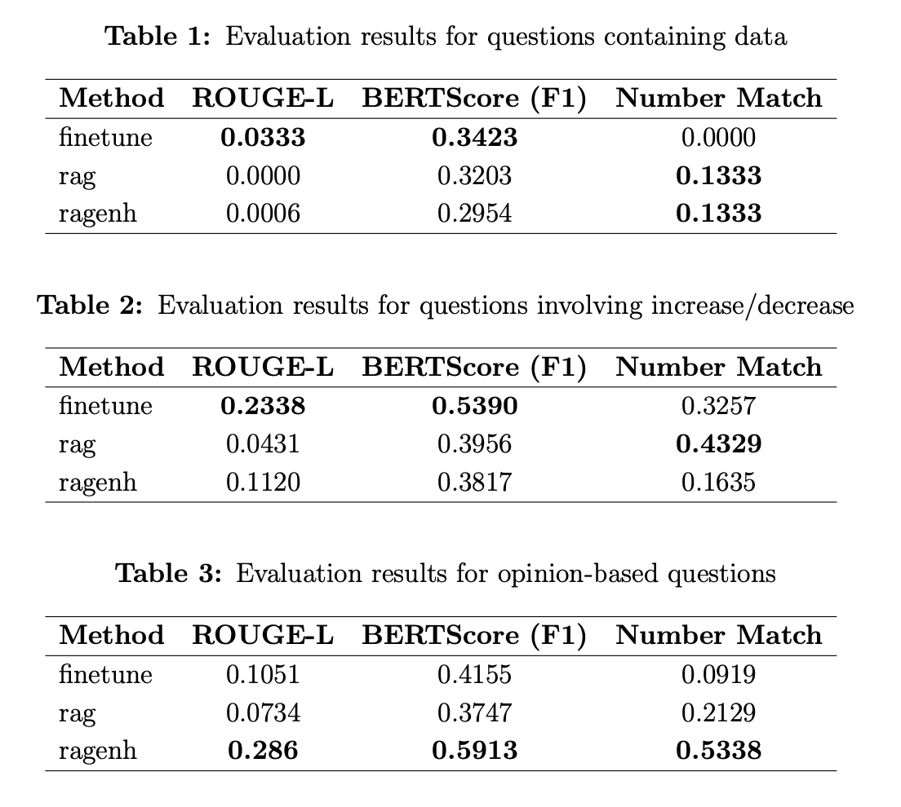

Comparative study of two LLM adaptation strategies for Turkish corporate financial question answering. The core design question: when working with structured tabular financial data in a low-resource language, is it better to adapt the model's weights (fine-tuning) or to adapt its context (retrieval)?
The system is built as a modular pipeline where each financial domain — liquidity, investment planning, debt strategy — operates as an independent QA module. Source data covers balance sheets and income statements from Turkish BIST100 companies (2008–2025), with derived financial ratios and temporal trends computed from KAP disclosures.
0.286
ragenh ROUGE-L on opinion-based tasks — best overall (fine-tune: 0.234)
0.591
ragenh BERTScore F1 on opinion-based tasks (fine-tune: 0.539)
0.534
ragenh Number Match Score — best numeric accuracy across all methods
No single method dominates across all task types. Fine-tuning is strongest on trend and directional questions, where the model's adapted priors about financial language matter most. ragenh wins on opinion-based and multi-step reasoning queries, where structured tabular access outweighs language fluency. Task type determines optimal architecture.

Evaluation metrics: RAG vs. fine-tuning vs. ragenh across task types